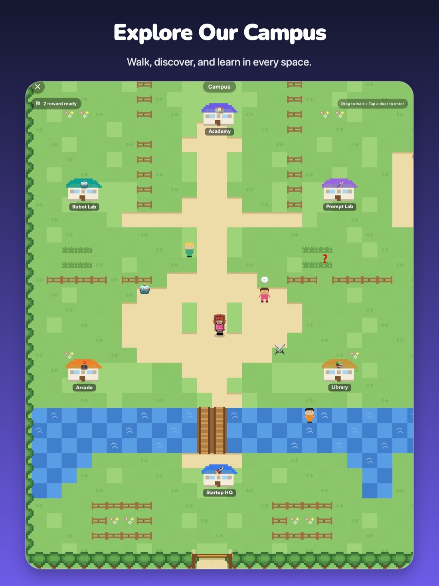
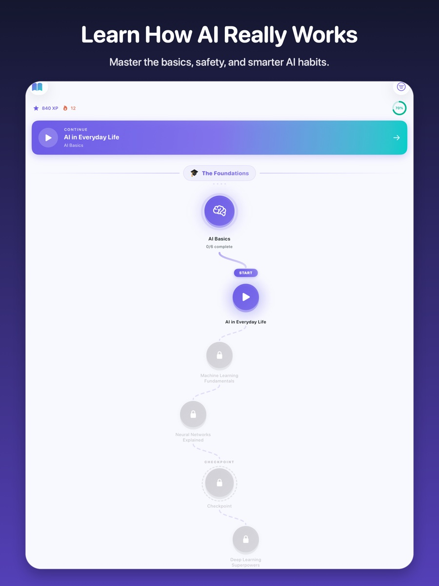
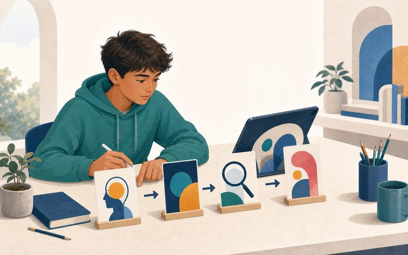
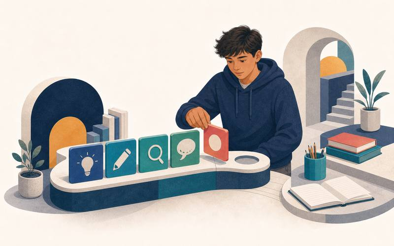
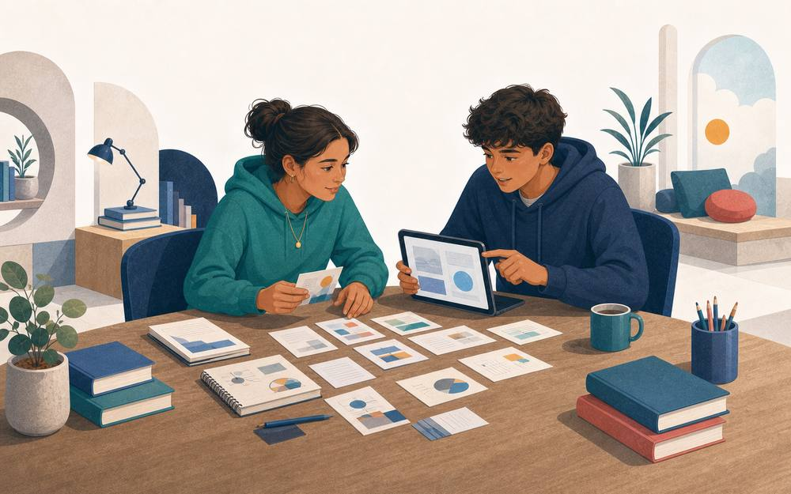
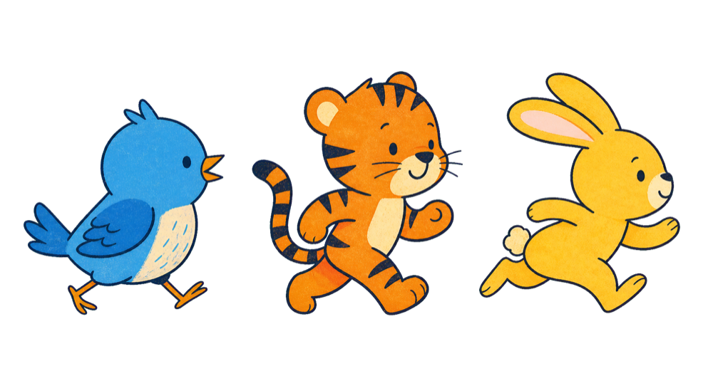
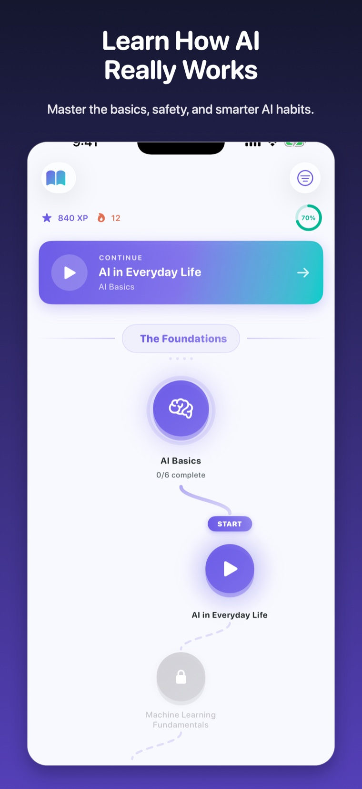

Understand the concept
Plain-language lessons explain what a system can do, how it works, and where its limits begin.
AI literacy for ages 8 and up
Short lessons, active games, and an explorable campus help learners check AI answers, protect private information, and keep human judgment in charge.


A better learning loop
Every part of Vizancia is designed to help learners explain an idea, test their understanding, and decide what needs a reliable source or knowledgeable person.
Plain-language lessons explain what a system can do, how it works, and where its limits begin.
Quizzes, games, and examples turn passive reading into retrieval, comparison, and application.
Learners practise protecting private information, checking important claims, and knowing when to ask a person.
Try a sample question
This short example uses the same explain, choose, and reflect pattern that supports stronger AI habits.
Find the claim that depends on evidence.
Decide whether to trust, check, or stop.
Feedback connects the answer to a reusable habit.
Inside the product
Use lessons for structured understanding, games for practice, and connected challenges only when you choose them.

Lessons and quizzes
Move from AI fundamentals and training data to generative AI, prompting, bias, security, and social impact.

Progress and motivation
XP, levels, streaks, achievements, and a progress view make consistent practice visible without requiring a Vizancia account.
Active practice
Games vary the task so learners do more than repeat the same multiple-choice pattern.

Lesson, progress, and practice scenes are representative artwork. Actual interface details and availability may vary by platform and app version.
Vizancia 3.5 turns learning into a walkable AI Campus. Move your avatar, enter buildings, meet the campus crew, and choose whether to learn, practise, build, or play next.
Explore the AI CampusDrag to walk around the grounds and discover what is nearby.
Step into the Academy, labs, Arcade, Pixel Café, and Startup HQ.
Open lessons, games, missions, and hands-on AI challenges.
Campus screens and availability may vary by platform and app version.
The Learn path
Lessons are arranged as a winding path of connected nodes, so learners can see where they are, what comes next, and how each new idea builds on the last.
Start with a clear topic instead of facing an overwhelming library.
Work through focused explanations, examples, and questions at a manageable pace.
Completed lessons make progress visible and open the next part of the journey.


Actual Vizancia Learn screens on tablet and phone. Interface details may vary by app version.
Curriculum overview
The current curriculum spans 16 categories. These four themes show how the content progresses.
AI basics, machine learning, neural networks, training data, language, and vision.
Prompting, creative work, healthcare, robotics, work, and everyday decisions.
Uncertainty, hallucinations, evidence, bias, fairness, and human responsibility.
Privacy, security, manipulation, social impact, boundaries, and when to involve an adult.
Choose your route
Review age-aware learning goals, privacy boundaries, sample questions, and family guidance.
Explore the parent guide → HomeschoolSee a flexible curriculum, offline activities, assessment ideas, and ready-to-use resources.
Explore homeschool learning → Guided practiceReview the limited-beta Sandbox, its safeguards, and the adult-managed early-access process.
Review the Sandbox →A clear privacy boundary
Vizancia separates local learning from services that need a network connection so families can understand what changes before choosing a feature.
AI Learning Hub
Source-backed articles and printable activities help families and educators turn AI literacy into everyday conversation and practice.
Start with five minutes
Vizancia is free to download. Current lessons, games, and duels are included at no cost.
Store availability, compatibility, ratings, and current features are shown on the relevant store listing. Connected features have separate network and privacy requirements.